SmartTools Add-on Manual
SmartModifier Suite Manual
Version 1.0.0 / November 19, 2026 / For Blender 5.1.2
A modifier is a way to change a shape later without destroying the original (for example, rounding corners or smoothing). In Blender you normally work with modifiers in the wrench tab of the Properties Editor. With SmartModifier Suite, you can do the same work entirely in the Sidebar (N panel) of the 3D Viewport. You can switch which stage of the stack (the list of stacked modifiers) you are editing just by clicking a row. You can also connect the same modifier to several objects (as Instances) and adjust them all together. It also includes "Modifier Management", which switches the display of modifiers across the whole scene in one go. For how to install, localize, open the N panel, and use the "?" help button, see the common chapter of the SmartTools Overall Specification.
Inspect an intermediate modifier stage
Select the subdivision row to pause the downstream wireframe. Turn automatic disabling off to see the wireframe return.
- Select subdivision
- Pause later modifiers
- Restore wireframe

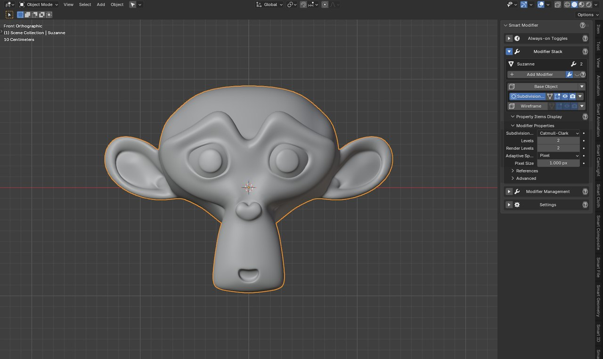

For stack diagnosis, watch the stage where the wireframe disappears and the stage where it returns. This answers a different editing question from synchronizing modifiers. Comparison reference · Modifiers Link
Before you try it Check the selected row and automatic-disable setting.
1. What This Add-on Does
A tool for adding, reordering, toggling the display of, and editing intermediate stages of modifiers, all from the 3D Viewport Sidebar.
- From "Add Modifier" in the Sidebar, you can add Blender's standard modifiers and the bundled user tools.
- Click a row in the stack to switch the stage you are editing ("Base Object" or any modifier).
- With the icons on each row, you can toggle Cage, Edit Mode, real-time display, and Render display without opening the Properties Editor.
- From the row menu, you can move, apply, use "Apply Below", delete, copy, cut, paste, and rename.
- If you select several objects and add a modifier, it is added to all of them as linked modifiers (Instances) with the same settings.
- With "Modifier Auto Disable", you can temporarily stop the modifiers after the stage you are editing and check the intermediate shape.
- With "Show End Result", you can see the final shape while editing an intermediate stage.
- With "Modifier Management", you can list modifiers and turn their display on or off or delete them in bulk.
- With "Always-on Toggles", you can run only the background features you need.
- You can copy an ID for registering a shortcut with "Copy ID" in "Settings".
- While modeling, go back and forth between the original shape and the modifier stages to fix things.
- Temporarily stop the modifiers after a stage and edit while viewing the intermediate shape.
- Make many copies of the same part and change their settings together.
- Switch the display of the same modifier across the whole scene at once.
At a Glance
This is how the screen changes when you use this add-on. Chapter 5 walks through the exact steps in the "Example" boxes for each feature.
ExampleLayer Roundness and Smoothness onto an Angular Cube(demonstrated on Cube)
With "Add Modifier", add Bevel (rounds corners) and Subdivision Surface (smooths) in order.
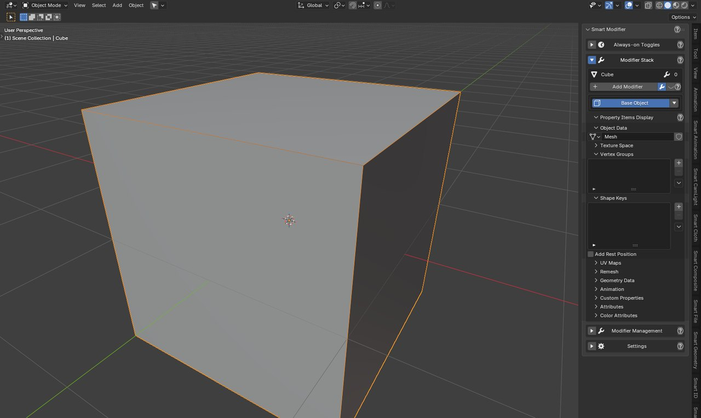
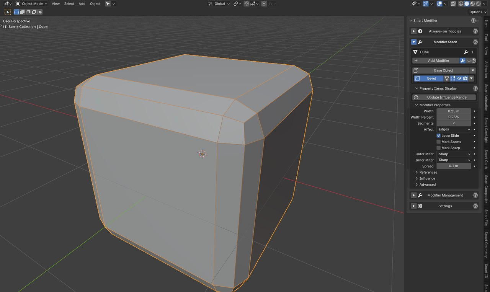
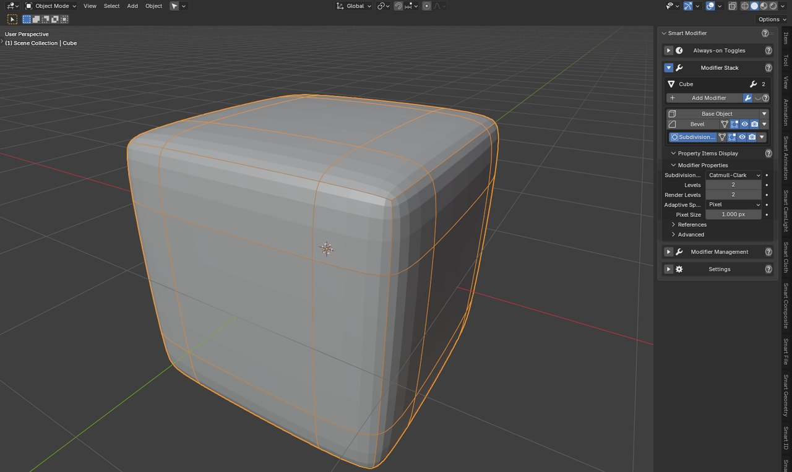
- Click the cube to select it.
- In "Modifier Stack", press "Add Modifier" and choose "Bevel" from "Generate". In "Property Items Display", set "Width" to 0.25 and "Segments" to 2.
- Press "Add Modifier" again and choose "Subdivision Surface" from "Generate". In "Property Items Display", set "Levels" to 2.
What to look for: The shape changes with each one you add. Bevel chamfers the corners, and layering Subdivision Surface on top rounds the whole thing. Both are modifiers, so the original cube's data stays as it is.
ExampleFix the Original Shape and See the Final Shape at the Same Time (Show End Result)(demonstrated on Suzanne)
If you turn on the eye icon ("Show End Result") in Edit Mode on "Base Object", you can edit the original shape while also seeing the final shape with all modifiers applied. The points of the original shape are hidden inside the final shape, so turn on X-ray to see both.
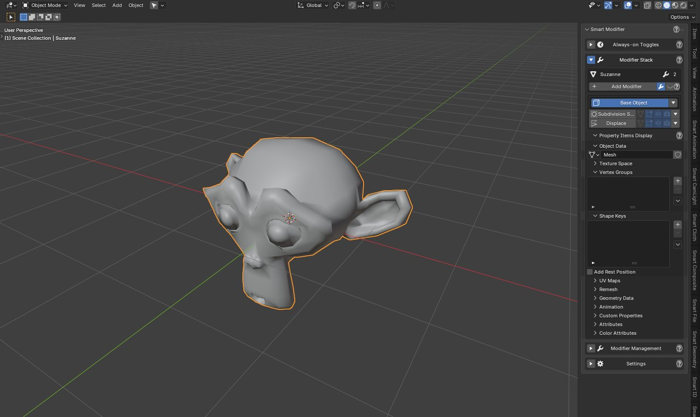
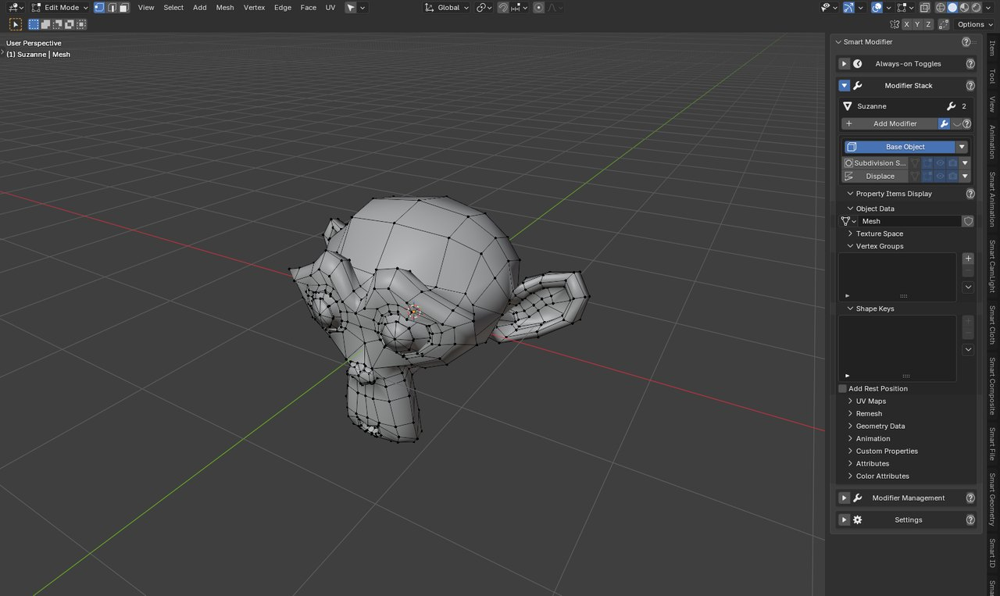
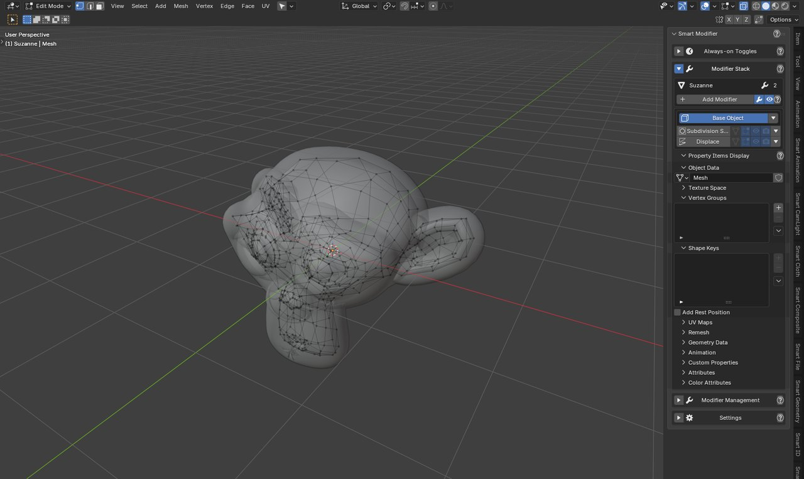
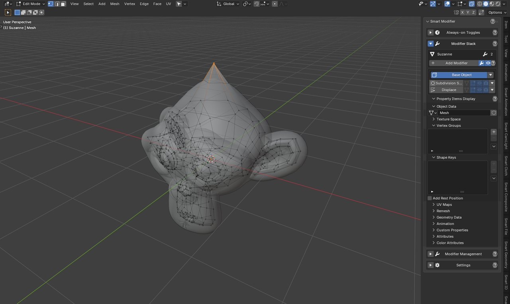
- Add Subdivision Surface and Displace (Strength 0.3) to Suzanne.
- Click the "Base Object" row in the stack, then click it again to enter Edit Mode.
- Press the eye icon ("Show End Result") to the right of "Add Modifier".
- Press Alt+Z to turn on X-ray.
- Of the points you can see through the shape, select the point at the top of the head and move it up.
What to look for: Pressing the eye icon keeps you in Edit Mode. With X-ray, you can see the points of the original shape and the swollen final shape at the same time. When you move a point of the original shape, the final shape moves along with it.
2. Key Features
This chapter walks through the features unique to this add-on, using numbered callouts on each figure. The numbers in a figure match the numbered list below it. Click a figure to enlarge it. Each individual setting is described under its own heading in Chapter 5.
2-1. Select a Row to Switch the Stage You EditTop Feature
When you want to fix the original shape after adding modifiers, the original shape is hard to see if the modifiers after it are still applied. In the SmartModifier Suite stack, the row itself is the "stage you edit". When you click a row, only the shape up to that stage is visible, and the modifiers after it are temporarily stopped automatically ("Modifier Auto Disable"). Clicking the selected row again enters Edit Mode at that stage.
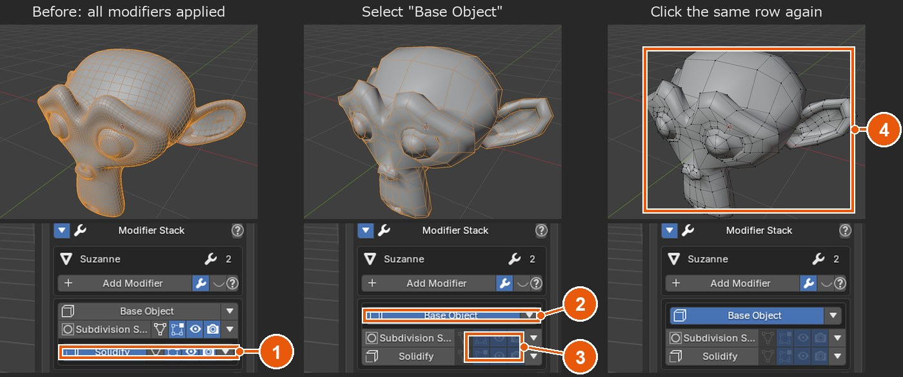
- 1Selected row (stage): The blue row is the current stage. If it is the bottom row, you see the shape with all modifiers applied
- 2"Base Object": Click it to stop all the modifiers after it and see only the angular original shape
- 3Stopped rows: The icons at the right of the row become dark, showing that it is stopped. Select the bottom row or turn Auto Disable off to start it running again
- 4Edit Mode of the original shape: Click the same row once more to move the points of the original coarse mesh directly. Click again to return to Object Mode
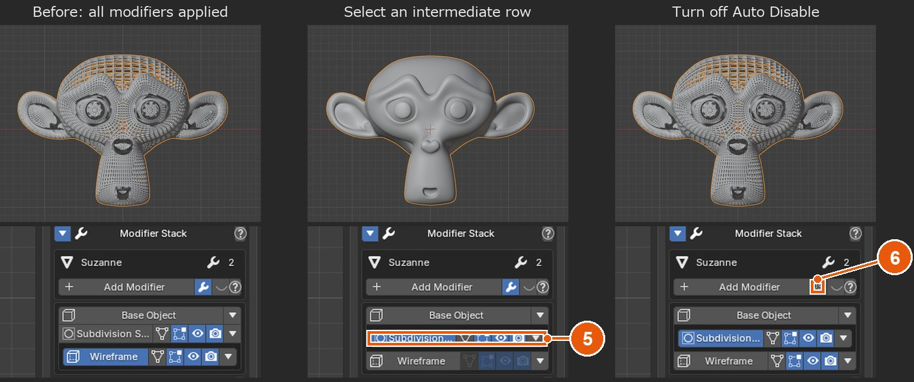
- 5Select an intermediate row: Selecting the Subdivision Surface row stops the Wireframe after it, and you see the smooth intermediate shape
- 6Modifier Auto Disable (wrench icon): On (blue) at first, it stops the rows after the selected one. When you turn it off, the lattice returns with the same row still selected
- In the "Smart Modifier" tab of the Sidebar (N panel), open "Modifier Stack".
- Click the row of the stage you want to fix. To fix the original shape, click ② "Base Object". The modifiers after it stop.
- Click the same row once more to enter Edit Mode, and move points.
- When you are done, select the bottom row to return to the shape with everything applied (①).
- Modifiers stop when you switch rows. Modifiers added without going through SmartModifier Suite, such as from the wrench tab, keep running until you next switch rows.
- If you press the eye icon on a stopped row, the shape stays as it is, and you decide only whether it will apply when it starts running again.
- Switching rows does not change the current mode (Object Mode or Edit Mode).
- With "Active Stack Level Shortcuts" in "Settings", you can create keys that move the stage you are editing one level up or down.
Settings in detail: 5-2. Modifier Stack, 5-6. Settings
2-2. Fix the Original Shape and See the Final Shape Too (Show End Result)See It in Figures
While you edit the original shape, the modifiers after it are stopped, so you cannot tell how it will look in the end. When you press the eye icon ("Show End Result") to the right of "Add Modifier", the final shape with all modifiers applied is also shown while you stay in Edit Mode. When you move points of the original shape, the final shape moves along with them.
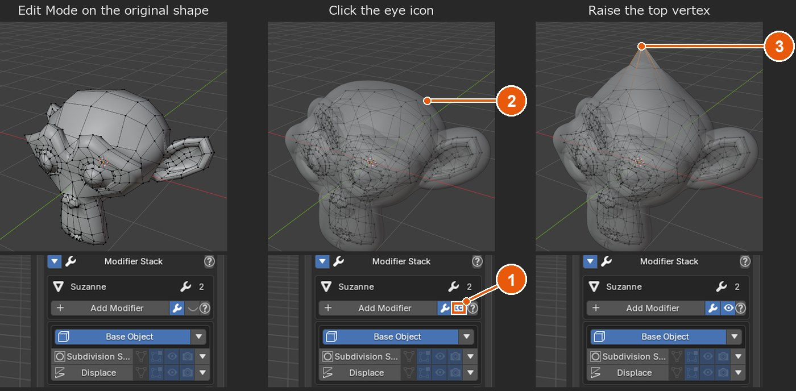
- 1Show End Result (eye icon): Can be pressed while staying in Edit Mode. Off at first, and while off it is a closed eye
- 2Final shape: The swollen final shape appears. Because of X-ray, you can also see the points of the original shape inside it at the same time
- 3Move the original points: Raise the point at the top, and the final shape lifts along with it
- Click the "Base Object" row in the stack, then click it again to enter Edit Mode.
- Press the eye icon ①.
- Turn on X-ray with Alt+Z, then select and move the points of the original shape visible inside.
- It works while "Modifier Auto Disable" (the wrench icon to the left of ①) is on.
- The final shape is a separate display, so rows that are stopped stay faded while it is shown.
- With "Show End Result Shortcut" in "Settings", you can toggle it with a key.
Settings in detail: 5-2. Modifier Stack, 5-6. Settings
2-3. Linked Modifiers (Instances)See It in Figures
When you select several objects and use "Add Modifier", linked modifiers (Instances) with the same settings are added to all of them. Even if you select just one and change a value, the same change is applied to the objects linked to it, so you can adjust many things together. If you want just one to have different settings, you can break the link for that row only.
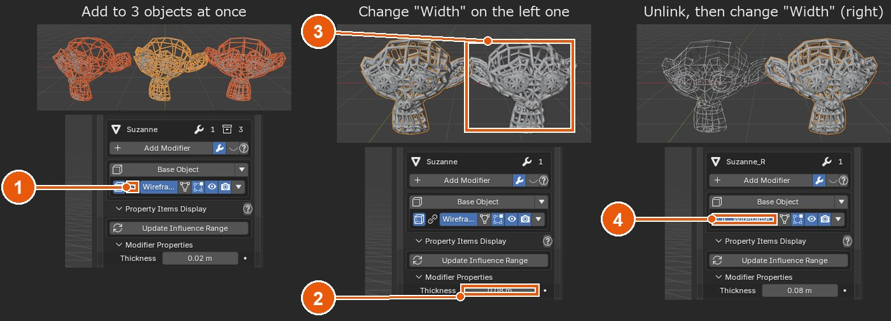
- 1Chain icon: The mark shown on rows of linked (Instance) modifiers
- 2"Width": I selected only the one on the left and enlarged it. A field of "Property Items Display"
- 3Linked counterpart: The lattice of the unselected one on the right also changes to the same thickness
- 4Release Instance: Choose it from the ▼ menu of the row. The chain icon disappears, and from then on only the one on the right gets thicker
- Hold Shift and select several objects, then choose a modifier from "Add Modifier".
- Select just one object and change a value in "Property Items Display". The same change is applied to everything linked.
- If you want to change only one, choose "Release Instance" from the ▼ of that row, then change the value.
- With "Select Instances" in the row's ▼, you can select all objects that share the same link (added to the current selection).
- When several objects are selected, only the Instance modifiers common to all of them appear as rows.
- With "Instance Copy" in "Settings", you can create linked duplicates of the original in bulk, offsetting them as you go. Modifiers added to the original later are also applied to the duplicates.
Settings in detail: 5-2. Modifier Stack, 5-3. Property Items Display, 5-6. Settings
3. Getting Started
How to install the add-ons, how to change the interface language, and how the N panel and the "?" help buttons work in every add-on are covered in the "SmartTools Overall Specification". Please read chapters 2 to 5 there first.
| ZIP to install | SmartModifierSuite_1.0.0.zip |
|---|---|
| Name shown in Blender | Smart Modifier |
| Supported Blender | 5.1.2 |
4. Where to Find It
This is the "Smart Modifier" panel in the "Smart Modifier" tab of the 3D Viewport Sidebar (N panel). It is divided into four collapsible section headers: "Always-on Toggles", "Modifier Stack", "Modifier Management", and "Settings".
| Editors | 3D Viewport |
|---|---|
| Tab | Smart Modifier |
| Mode | Object Mode |
- Hover over the 3D Viewport and press N to open the Sidebar (see the Overall Specification for details on opening it).
- Select "Smart Modifier" from the tabs at the right edge of the Sidebar.
- Click an object such as a mesh to select it. If nothing is selected, "Select an object." appears.
- Click the triangle to the left of a section header, or the header text, to open it. "Modifier Stack" is open from the start.

5. Features
Each heading is explained in order from the top of the panel. Click the "?" to the right of a heading to show the same explanation in Blender. The blue "Example" boxes show real operations on simple models such as Suzanne, with the 3D Viewport before and after.
5-1. Always-on Toggles
This is where you turn on or off features that keep running in the background while Blender is idle (such as automatic syncing and automatic list updates). A feature that is turned off stays stopped, so Blender is lighter while idle.
LocationThis is the topmost section header of the "Smart Modifier" panel. It is closed at first.
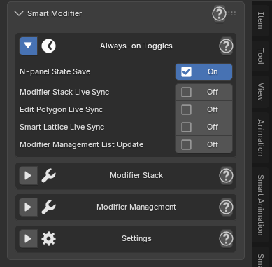
| Item | What it does |
|---|---|
| N-panel State Save | Whether Sidebar settings are saved to a file in Blender's settings folder. When on, they are saved immediately on every change. When off, nothing is written until you turn it back on. On at first. |
| Modifier Stack Live Sync | A mechanism that automatically keeps the stack display, the state of "Show End Result", and the values in the settings fields up to date as you edit. Off at first. Leave it off if you want to keep things light. Linking of values between connected modifiers (Instances) works even when this is off. |
| Edit Polygon Live Sync | Runs selection tracking and stack syncing for the bundled Edit Mesh Modifier (see "Edit Polygon Maintenance" below). Off at first. While off, it stays stopped and is never turned on behind your back. |
| Smart Lattice Live Sync | Runs the on-screen display and syncing of the bundled Smart Lattice (a lattice is a box-shaped frame used for deformation). Off at first. Turn it on only while editing the lattice deformation. |
| Modifier Management List Update | Keeps rebuilding the "Modifier Management" lists automatically. Off at first. In heavy scenes, leave it off and update manually only when needed. |
| On / Off (button at the right of each row) | Each press toggles between "On" and "Off". When enabled, a check mark appears and the button is shown in blue, so you can see the current state at a glance. At first, only "N-panel State Save" is "On". |
5-2. Modifier Stack
This is the main work area for adding modifiers, switching the stage you are editing, toggling display, reordering, and more. The "Base Object" (the original shape before any modifiers are applied) and the stacked modifiers are listed in order.
LocationThis is the second section header of the "Smart Modifier" panel. It is open from the start.

| Item | What it does |
|---|---|
| Object name and modifier count | The top row shows the name of the selected object and the number of modifiers. When several objects are selected, the number selected is also shown. |
| Add Modifier | Opens the add menu. At the top is the group of bundled user tools (for example, "UV / Mapping" and "Deform / FFD / Shape"), and below it are Blender's standard categories ("Edit", "Generate", "Deform", "Normal", "Physics", and so on). Choosing one closes the menu, adds that modifier to the stack, and shows its shape on screen. A new modifier is inserted directly below the currently selected row (when "Base Object" is selected, it is inserted first). |
| Modifier Auto Disable (icon to the right of "Add Modifier") | When on, it temporarily turns off Cage, Edit Mode, real-time, and Render for the modifiers after the selected stage. You can view and edit only the shape up to the selected stage. When "Base Object" is selected, all modifiers are stopped. They are stopped when you switch rows. Modifiers added without going through SmartModifier Suite, such as from the wrench tab, keep running until you next switch rows. On at first. This icon and the eye icon to its right appear only when a mesh object is selected. What happens when they are restored is set by "Auto Disable Restore" in "Settings". |
| Show End Result (eye icon) | When on, the final shape with all modifiers applied is displayed while you edit an intermediate stage. You can press it while staying in Edit Mode, and moving points moves the final shape along with them. Off at first, and while off it shows a closed-eye icon. It works while "Modifier Auto Disable" is on. |
| Base Object | Click to switch to the stage where you edit the original shape before modifiers are applied. The ▼ menu to the right has "Paste" and "Paste (Instance)", and "Release Instance" also appears when it is connected as an Instance. |
| Modifier row (name) | Click to make that stage the target of editing. The current mode (Object Mode or Edit Mode) stays as it is. Clicking the selected row again switches between Edit Mode and Object Mode. Instance rows have a chain icon showing the link. |
| The 4 icons on a row | From the left, these turn on or off: Cage (shows the points being edited on top of the deformed shape), display in Edit Mode, real-time (display in the viewport), and use in Render. They mean the same as the buttons in the header of a standard Blender modifier. The icons on a running row show its actual current state, and pressing one toggles that state. If the eye icon is open, that modifier is affecting the shape. Rows stopped by "Modifier Auto Disable" appear faded as a whole. The icons on a faded row show the state the row will have when it starts running again. Pressing one toggles the state it will have when it starts running, and the shape does not change until then. The final shape of "Show End Result" is a separate display, so rows that are stopped stay faded while it is shown. |
| Row menu (▼) | Contains "Move Up", "Move Down", "Apply", "Apply Below", "Delete", "Copy", "Cut", "Paste", "Paste (Instance)", and "Rename". On Instance rows, "Release Instance" and "Select Instances" also appear. |
| Apply / Apply Below | "Apply" bakes the result of that modifier into the shape and removes the modifier. "Apply Below" bakes everything from the base object up to that row together and keeps the modifiers after it. To undo either one, use Undo (Ctrl+Z). |
| Paste / Paste (Instance) | "Paste" adds the copied modifier as an independent modifier that can be edited separately. "Paste (Instance)" pastes it in a linked state. If you change one, the other changes in the same way. |
| Select Instances / Release Instance | "Select Instances" selects all objects that share the same link (it adds them to the current selection). "Release Instance" detaches only that row from the link, keeping its current settings. |
ExampleLayer Roundness and Smoothness onto an Angular Cube(demonstrated on Cube)
With "Add Modifier", add Bevel (rounds corners) and Subdivision Surface (smooths) in order.
- Click the cube to select it.
- In "Modifier Stack", press "Add Modifier" and choose "Bevel" from "Generate". In "Property Items Display", set "Width" to 0.25 and "Segments" to 2.
- Press "Add Modifier" again and choose "Subdivision Surface" from "Generate". In "Property Items Display", set "Levels" to 2.
What to look for: The shape changes with each one you add. Bevel chamfers the corners, and layering Subdivision Surface on top rounds the whole thing. Both are modifiers, so the original cube's data stays as it is.
ExampleStop the Modifiers and Edit the Original Shape(demonstrated on Suzanne)
If you switch to the "Base Object" stage with modifiers attached, the modifiers after it are temporarily stopped and only the original shape is visible. Clicking again enters Edit Mode for that shape.
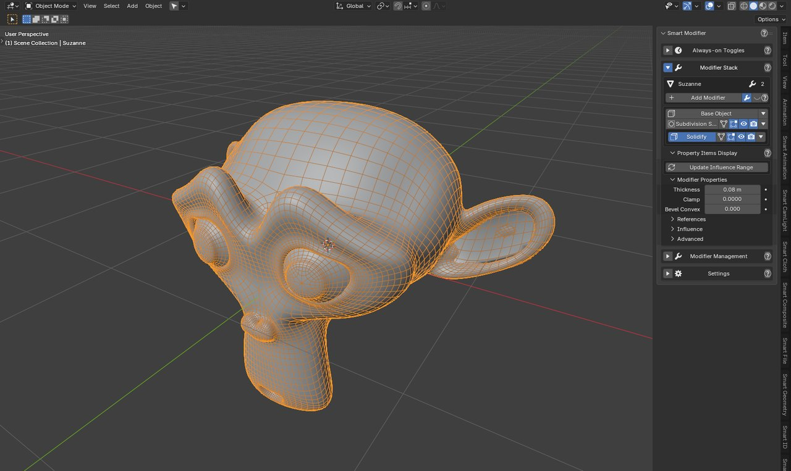
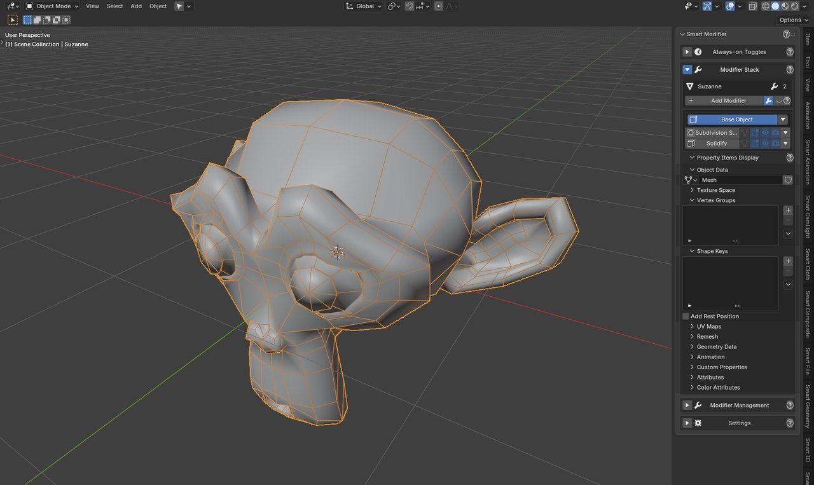
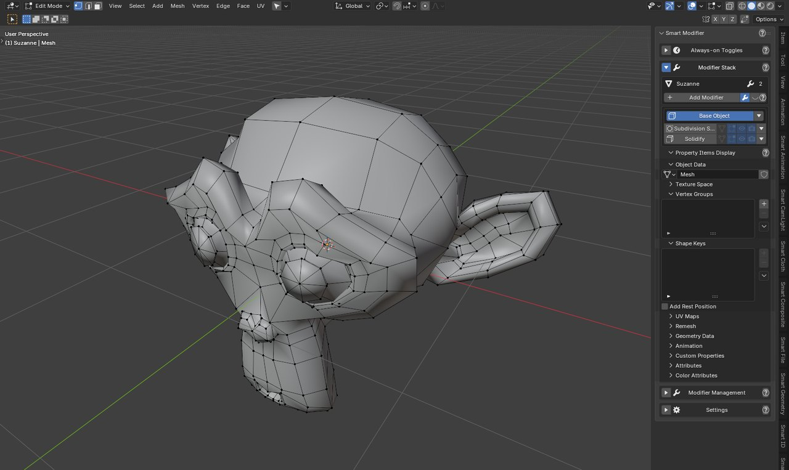
- Add Subdivision Surface and Solidify to Suzanne.
- Click the "Base Object" row in the stack (leave "Modifier Auto Disable" on).
- Click the "Base Object" row again to enter Edit Mode.
What to look for: When you select "Base Object", the smooth, thick shape switches to the angular original Suzanne. The icons at the right of the rows become dark, showing that they are stopped. In Edit Mode, you can move the points of the original coarse mesh directly.
ExampleModifiers Added from the Wrench Tab Stop When You Switch Rows(demonstrated on Cube)
If you add modifiers without going through SmartModifier Suite, such as from the wrench tab, while "Base Object" is selected, they apply to the shape as they are, and the row icons are shown as on. "Modifier Auto Disable" stops them when you next switch rows.
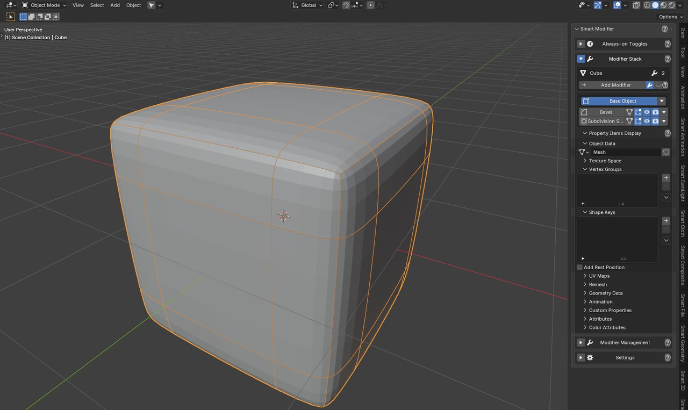
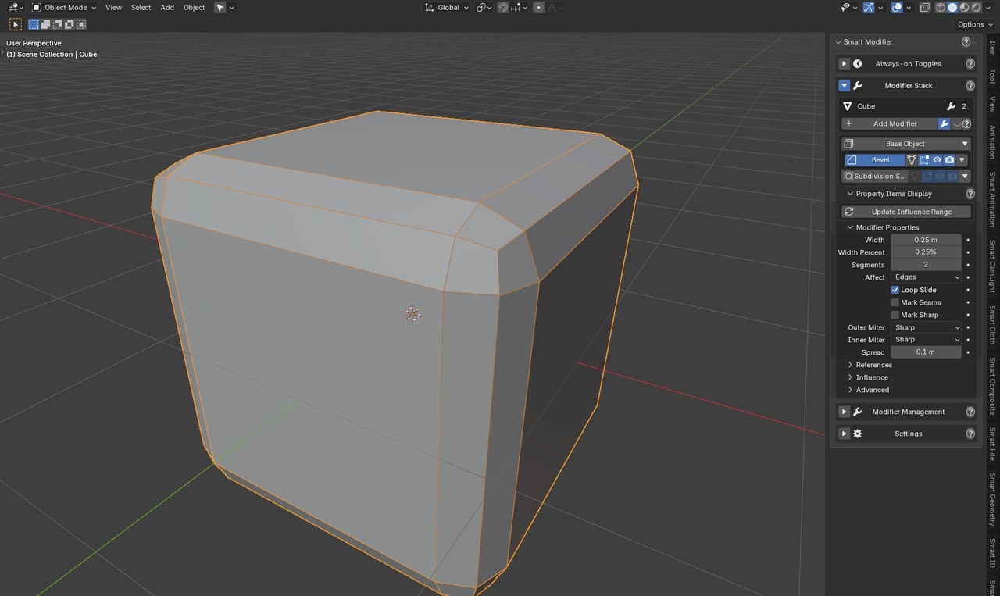
- Select a cube and, with the stack still on "Base Object", add Bevel and Subdivision Surface from the wrench tab of the Properties Editor.
- Click the "Bevel" row in the stack.
- Click the "Base Object" row in the stack.
What to look for: Right after adding, the shape is round and the eye icons on the rows are open. Selecting the "Bevel" row stops the Subdivision Surface after it, and selecting "Base Object" stops everything and returns to the original cube. Stopped rows appear faded as a whole.
ExamplePress the Eye on a Stopped Row to Decide Its State When It Starts Running(demonstrated on Cube)
Rows stopped by "Modifier Auto Disable" appear faded as a whole. The icons on a faded row show the state the row will have when it starts running again. When you press the eye, the shape does not change yet, and only whether it will apply when it starts running is toggled. A display that the suite temporarily stopped returns to its original state when you turn it back on. A display you turned off manually in the standard wrench tab does not turn back on by itself when you switch rows. If you use "Force Enable Selected States", that setting is applied.

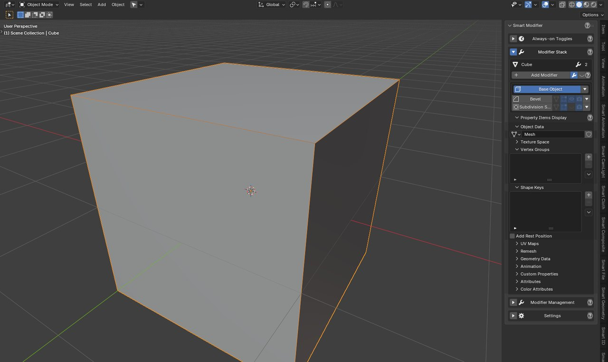
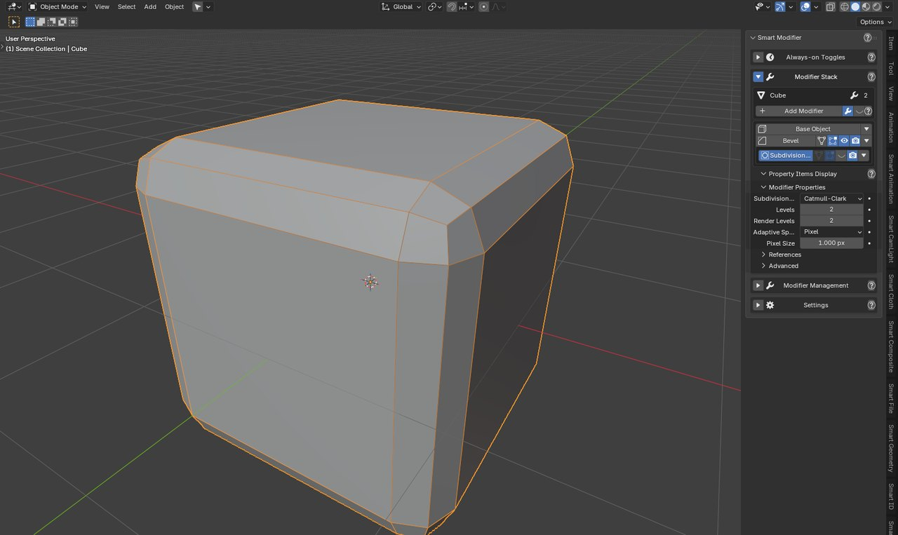
- Add Bevel and Subdivision Surface to a cube.
- Click the "Base Object" row in the stack.
- Press the eye icon on the faded "Subdivision Surface" row.
- Click the "Subdivision Surface" row in the stack.
What to look for: The shape does not change when you press the eye. When you switch rows and the rows start running, Bevel applies and the Subdivision Surface with its eye closed does not.
ExampleBake Up to an Intermediate Stage into the Shape (Apply Below)(demonstrated on Suzanne)
If you choose "Apply Below" on the Subdivision Surface row, everything up to there is baked into the shape and the modifiers after it remain.
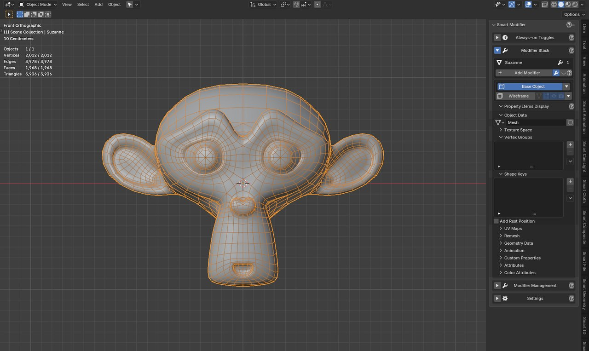
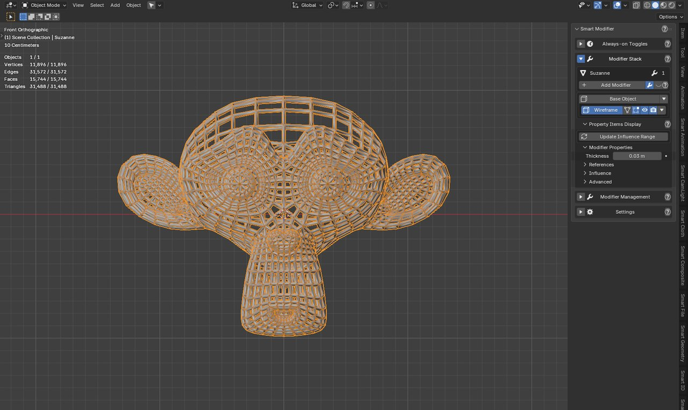
- Add Subdivision Surface and Wireframe to Suzanne.
- Press the ▼ on the Subdivision Surface row and choose "Apply Below".
- Click the remaining Wireframe row.
What to look for: After applying, the Subdivision Surface row disappears from the stack, and the original shape itself becomes a fine mesh (after applying, "Base Object" is selected and only the original shape is visible). When you select the remaining Wireframe row, the lattice is applied to the finer mesh, and it looks the same as before applying. The modifiers are reduced to one.
ExampleAttach Linked Modifiers to 3 Suzannes in One Step(demonstrated on 3 Suzannes)
When you select several objects and use "Add Modifier", linked (Instance) modifiers are added to all of them.
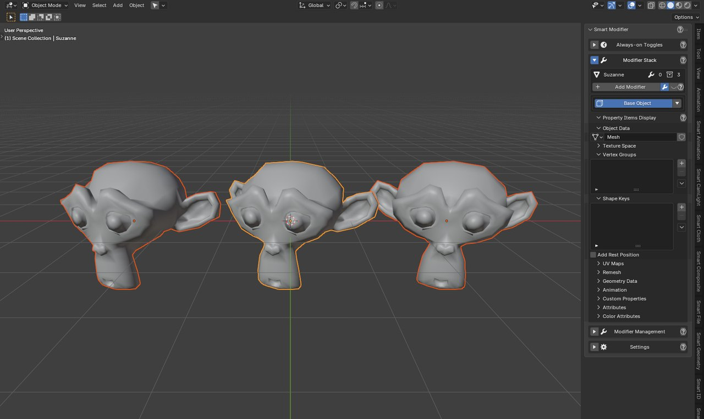
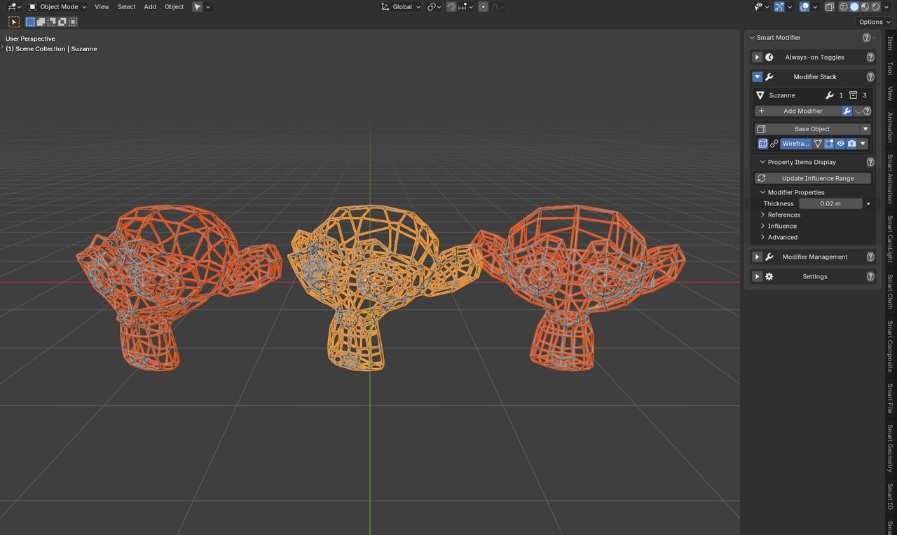
- Hold Shift and select the 3 Suzannes.
- From "Add Modifier", choose "Wireframe" under "Generate".
What to look for: With a single addition, all 3 become lattice-shaped. A chain icon appears on the stack rows, showing that they are linked modifiers.
ExampleFix the Original Shape and See the Final Shape at the Same Time (Show End Result)(demonstrated on Suzanne)
If you turn on the eye icon ("Show End Result") in Edit Mode on "Base Object", you can edit the original shape while also seeing the final shape with all modifiers applied. The points of the original shape are hidden inside the final shape, so turn on X-ray to see both.
- Add Subdivision Surface and Displace (Strength 0.3) to Suzanne.
- Click the "Base Object" row in the stack, then click it again to enter Edit Mode.
- Press the eye icon ("Show End Result") to the right of "Add Modifier".
- Press Alt+Z to turn on X-ray.
- Of the points you can see through the shape, select the point at the top of the head and move it up.
What to look for: Pressing the eye icon keeps you in Edit Mode. With X-ray, you can see the points of the original shape and the swollen final shape at the same time. When you move a point of the original shape, the final shape moves along with it.
ExampleSelect an Intermediate Stage and Stop the Modifiers After It (Modifier Auto Disable)(demonstrated on Suzanne)
When you select an intermediate row, the modifiers after it are temporarily stopped. When you turn "Modifier Auto Disable" off, the ones that were stopped come back.
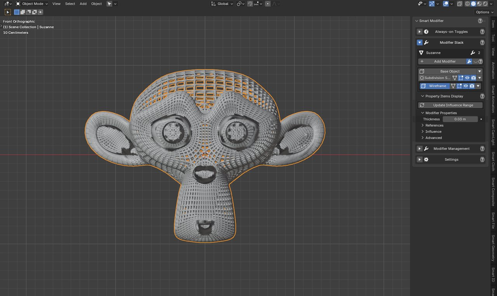
- Add Subdivision Surface and Wireframe to Suzanne.
- Click the Subdivision Surface row in the stack.
- Press the wrench icon ("Modifier Auto Disable") to the right of "Add Modifier" to turn it off.
What to look for: When you select the row, the lattice disappears and you see the smooth intermediate shape. When you turn the wrench icon off, the lattice returns with the same row still selected.
ExampleBreak the Link on Just One Object to Give It Different Settings (Unlink Instance)(demonstrated on 2 Suzannes)
With "Release Instance" in the row's ▼ menu, you detach only that row from the link. After it is detached, changing a value does not affect the other.

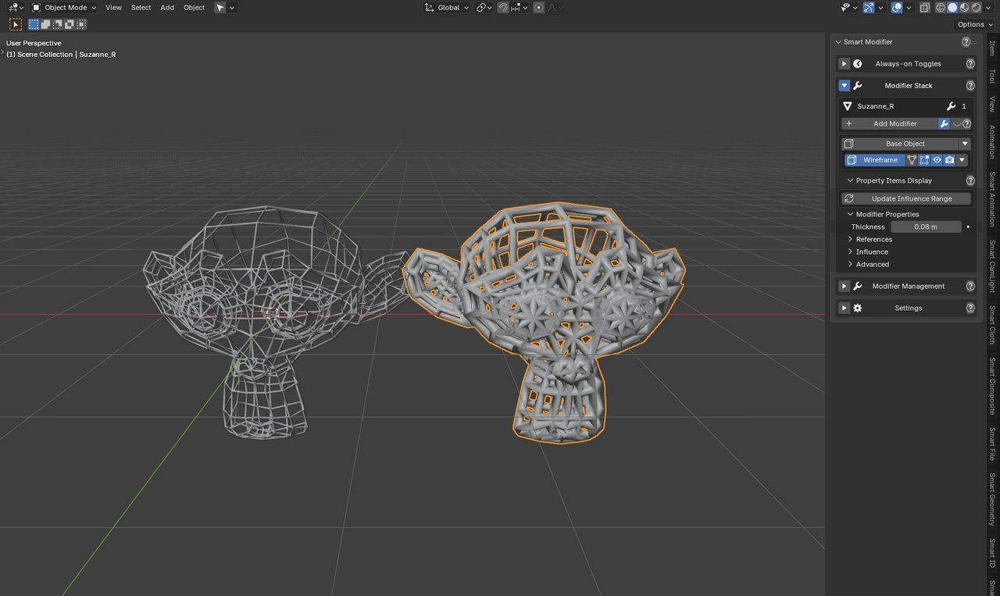
- With linked Wireframes on 2 objects, click just the one on the right to select it.
- Press the ▼ on the Wireframe row and choose "Release Instance".
- Increase "Width" in "Property Items Display".
What to look for: Only the right Suzanne's lattice gets thicker, and the left stays as it is. The chain icon on the row also disappears.
ExampleRoughen the Surface with the Bundled Noise Modifier(demonstrated on Smooth Suzanne)
The bundled user tools are listed near the top of "Add Modifier". Here, add "Noise Modifier".
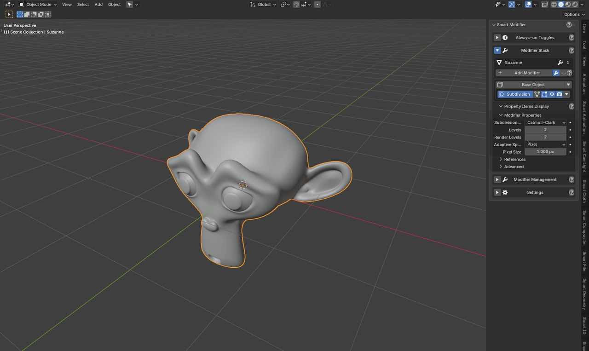
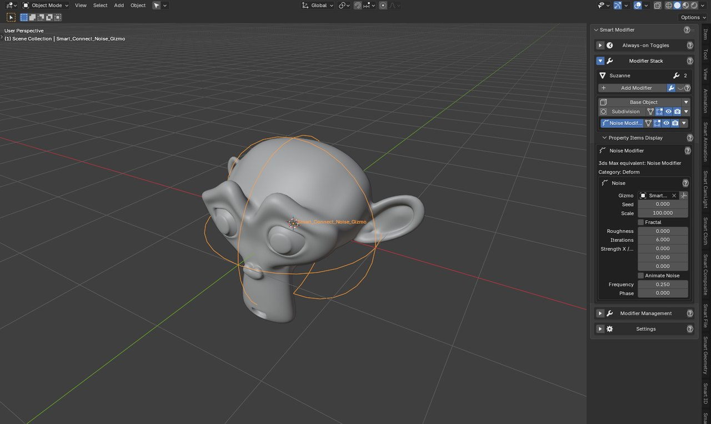
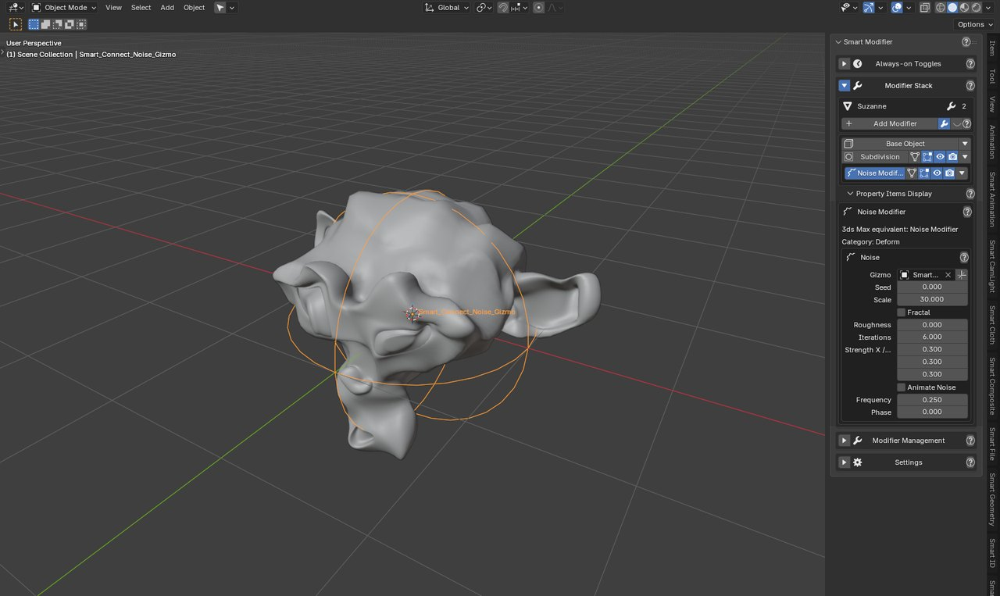
- Select a Suzanne with Subdivision Surface applied, and click its row in the stack (in the figure, the row named "Subdivision").
- Press "Add Modifier" and choose "Noise Modifier" from "Deform / FFD / Shape".
- In the "Noise Modifier" field of "Property Items Display", set "Scale" to 30 and each of "Intensity X / Y / Z" to 0.3.
What to look for: Right after adding, "Intensity" is 0, so the shape does not change. A round frame (the Noise gizmo) appears and the selection moves to this frame, but the panel can still be operated as Suzanne's stack. Raising the intensity roughens the surface. The stack row can have its display toggled or be deleted, just like other modifiers.
ExampleMake a Copy on the Opposite Side with the Bundled Mirror Modifier(demonstrated on Suzanne offset sideways from the origin)
When you add "Mirror Modifier" from the bundled user tools in "Add Modifier", the settings fields show "Scale", "Copy", and "Center". It flips in the direction of the axis you set to −1 in "Scale".
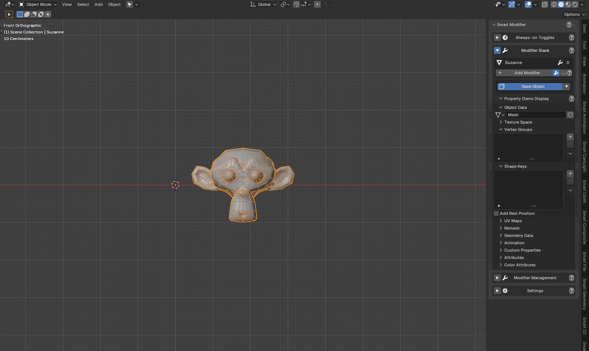
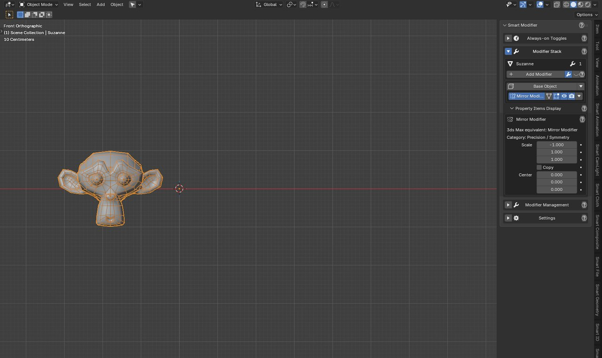
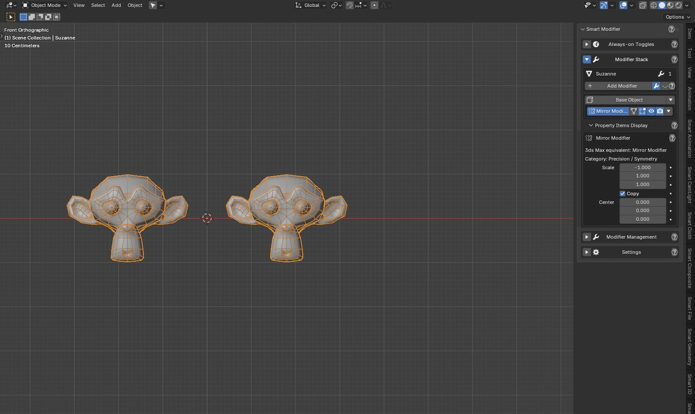
- Select a Suzanne offset sideways from the origin.
- Press "Add Modifier" and choose "Mirror Modifier" from "Precision / Symmetry".
- In the "Mirror Modifier" field of "Property Items Display", turn on "Copy".
What to look for: Right after adding, Suzanne flips and moves to the opposite side of the origin. When you turn on "Copy", the original shape stays too, and 2 Suzannes line up left and right. Moving "Center" changes the position that the flip is based on.
5-3. Property Items Display
A collapsible section that shows the settings fields (numbers and sliders) of the stage selected in the stack inside the Sidebar. Closing it does not change any values and makes the panel shorter.
LocationIt is directly below the "Modifier Stack" list. It is open at first.
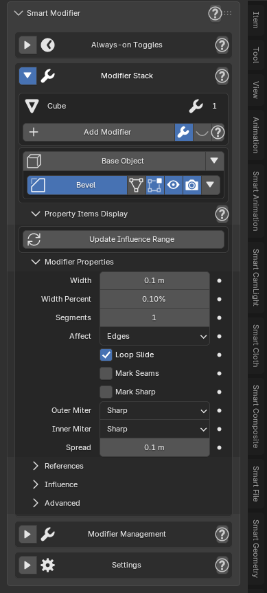
| Item | What it does |
|---|---|
| Property Items Display (header) | Click to open or close. When open, the settings fields of the selected modifier appear. When "Base Object" is selected, it shows the same content as the "Data" tab of the Properties Editor (the settings of the original object's data). |
| Update Influence | Appears on rows of modifiers whose effect can be limited with a vertex group. It writes the points, edges, and faces you selected at the "Base Object" or Edit Mesh Modifier stage as the range of influence. If nothing is selected, the whole mesh becomes the range. |
| Settings fields | Values changed here are reflected in the shape on screen immediately. When connected as Instances, changing just one object applies the same change to the objects connected to it. |
ExampleChange the Value on One Object, and the Linked Ones Change Too(demonstrated on 2 Suzannes)
With linked (Instance) modifiers, even if you select just one object and change a value, the same change is applied to the other.
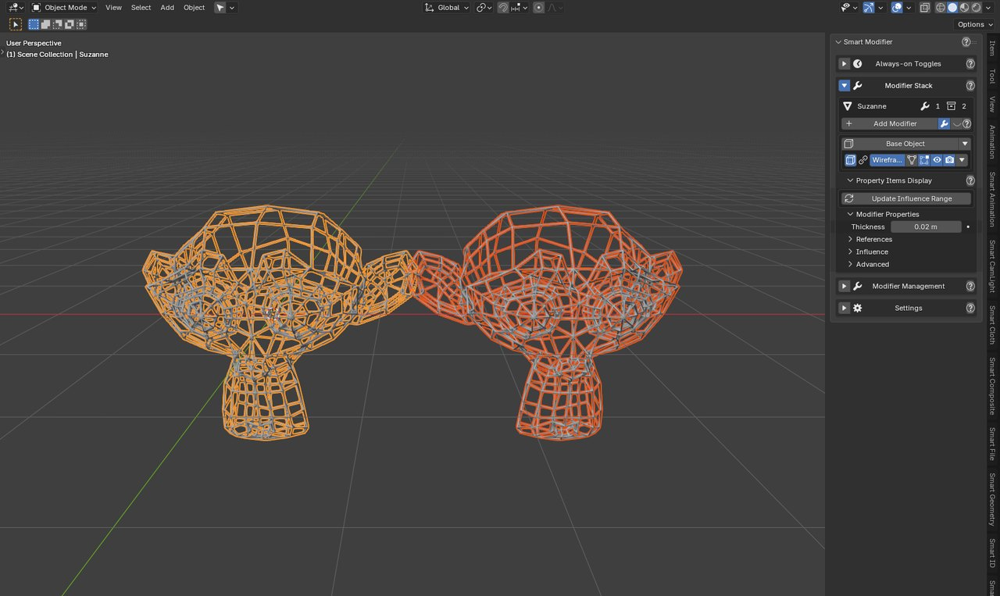
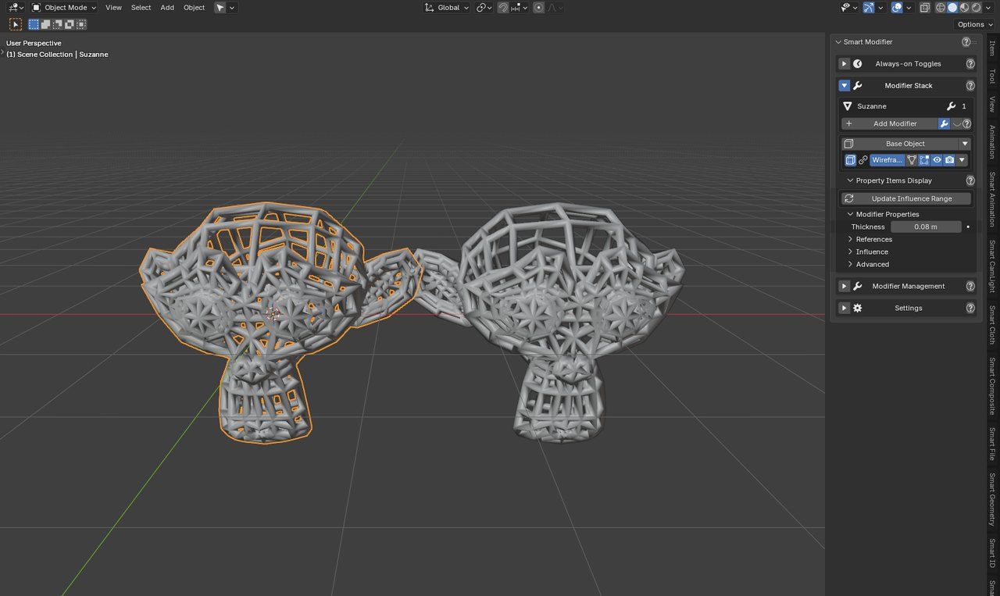
- Hold Shift and select 2 Suzannes, then choose "Wireframe" under "Generate" from "Add Modifier".
- Click just one object to select it.
- Increase "Width" in "Property Items Display".
What to look for: Only the left one is selected, but the lattice of the right Suzanne also becomes the same thickness.
5-4. Edit Polygon Maintenance
A collapsible section for upkeep that appears only when the bundled Edit Mesh Modifier (a layer where you edit by moving points on top of the result of the modifiers above it) is in the stack.
LocationIt is inside "Modifier Stack", below "Property Items Display". It appears only when the stack has an Edit Mesh Modifier layer. It is closed at first.
| Item | What it does |
|---|---|
| Rebake All | Recalculates all Edit Mesh Modifier layers. After changing the order of the stack, for example, it fixes the gap between the original shape and the edited shape. |
| Sync Level Switch | Appears only when an Edit Mesh Modifier row is selected. It safely realigns the editing state of the Edit Mesh Modifier when you switch stages. |
5-5. Modifier Management
A place that lists modifiers and the objects that have them, so you can switch display and delete them in bulk.
LocationThis is the third section header of the "Smart Modifier" panel. It is closed at first.

| Item | What it does |
|---|---|
| Object / Modifier | Switches what management is based on. "Object" works on the modifiers of the currently selected object, with the "Object List" at the top. "Modifier" works on all modifiers in the scene by name and type, with the "Modifier List" at the top. Switching rebuilds the lists. |
| Update List (update icon) | Rescans the scene and rebuilds the two lists. Press it after adding, deleting, or renaming a modifier, or when the display is out of date. |
| Object List | Objects are listed here. Click a name to select only that object. Shift-click or Ctrl-click to add to the current selection. If you enter part of a name in the field above, then from the next time the list is rebuilt (for example, when you press the update icon), only objects whose names contain it are listed. |
| Select All Listed | The button to the right of the "Object List" header. It clears the current selection and selects all objects shown in the list. |
| Modifier List | Modifiers are listed here. Pressing the 4 icons at the left of each row (Cage, Edit Mode, Viewport, Render) toggles them on all objects that have that row's modifier. For Instances, everything connected changes together. When the states are mixed, a "?" icon appears. Enter text in the field above to filter. |
| Viewport ON / Viewport OFF / Delete (the 3 buttons to the right of the filter field) | Turns display on, turns display off, or deletes the modifiers selected in the "Modifier List" on all objects that have them. From the left, they are the screen icon ("Viewport ON"), the dark screen icon ("Viewport OFF"), and the trash icon (Delete). A confirmation appears for Delete. |
| Select Instance Modifier Objects (chain icon) | Appears to the right of the "Modifier List" header only when based on "Object". It selects all objects that use the same Instance modifier as the selected row. |
ExampleHide the Same Modifier Across the Scene at Once(demonstrated on 3 Suzannes)
Select a row in the "Modifier List" of "Modifier Management" and press "Viewport OFF", and the display disappears on all objects that have that modifier.
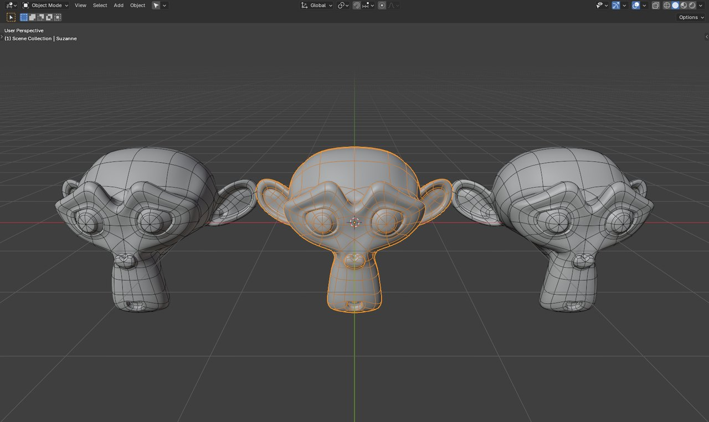
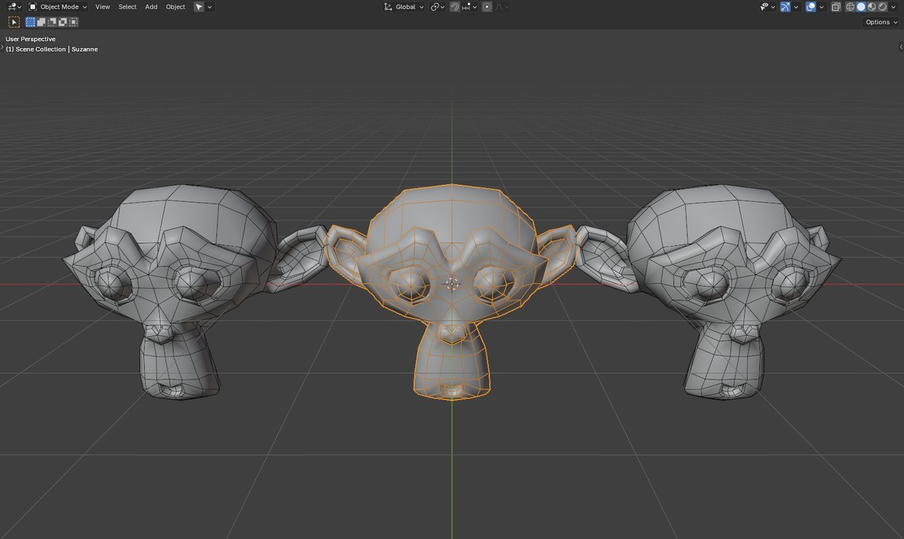
- Open the "Modifier Management" section header and press "Modifier".
- In the "Modifier List", select the row of the modifier you want to hide (here, Subdivision Surface).
- Of the 3 icons to the right of the filter field, press the middle one, the dark screen icon ("Viewport OFF").
What to look for: All 3 return from the smooth shape to the angular original shape at once. You do not need to switch the display one at a time.
5-6. Settings
A place that gathers how SmartModifier Suite behaves and information for registering shortcuts.
LocationThis is the bottom section header of the "Smart Modifier" panel. It is closed at first.

| Item | What it does |
|---|---|
| Show End Result Shortcut | Use this when you want to toggle "Show End Result" with a key. Press "Copy ID" to copy the ID used for registration. The recommended place to register it is "Preferences > Key Map > 3D View > 3D View (Global)". |
| Active Stack Level Shortcuts | Use this to create keys that move the stage you are editing one level up or down. Copy the IDs with "Copy ID" for "Move Active Level Up ID" and "Move Active Level Down ID". There are two recommended places to register them: for Object Mode, "Preferences > Key Map > 3D View > Object Mode", and for Edit Mode, "Preferences > Key Map > Mesh > Edit Mode". Only the stage you are editing moves; the order of the modifiers does not change. Even when "Modifier Auto Disable" or "Show End Result" is on, it switches in the same way as clicking a row in the stack. |
| Instance Copy (button) | Duplicates the selected objects. In the dialog that appears, choose an independent duplicate (Normal) or a linked duplicate (Instance), and the number. With Instance, the SmartModifier Suite stacks of the original and the duplicate are linked. |
| Release Instance (button) | Breaks the link of the selected objects and makes them independent objects. |
| Drag Clone | Default values for the drag-to-duplicate operation. In "Clone Defaults", choose "Copy" or "Instance" with "Default Clone Type", and set the number with "Default Number of Copies" (at first, "Copy" and 1). These values appear first in the duplicate confirmation dialog. To use the operation itself, copy the ID with "Copy ID" under "Drag Clone ID" below and register a key. |
| Instance Copy Shortcut IDs | There are rows for "Instance Copy ID", "Release Instance ID", and "Drag Clone ID", and you copy each ID with its "Copy ID". The recommended places to register them are "Preferences > Key Map > 3D View > Object Mode" for Instance Copy and Unlink Instance, and "Preferences > Key Map > 3D View > 3D View (Global)" for Drag Clone. |
| Enable Smart Modifier ("Modifier Stack" frame) | Whether to show the "Modifier Stack" work area. Turning it off does not change the object's modifiers. |
| Base Object Top / Base Object Bottom ("Modifier Stack Display") | The direction of the stack order. "Up" is the order read from the top, as in Blender; "Down" is for when you want to see the last modifier at the top. Only the display order changes, not the actual order. |
| Restore Behavior ("Restore from Auto Disable") | What happens when modifiers stopped by "Modifier Auto Disable" are restored. "Preserve Current States" returns them exactly to their state before they were stopped. "Force Enable Selected States" returns them to their state before they were stopped and then turns on only the selected items. When you choose this method, a "Force ON" row appears right below, where you pick which items to turn on with the 4 icons (Cage, Edit Mode, Viewport, Render). |
| Enable Modifier Management ("Bundled Subtools" frame) | Whether to show the "Modifier Management" section header. |
| Edit Polygon Modifier (bundled subtool) / Smart Lattice Modifier (bundled subtool) | Whether to use the bundled Edit Mesh Modifier and Smart Lattice. When on, "Edit Mesh Modifier" and "Smart Lattice" appear among the user tools in "Add Modifier". If you do not use them, turn them off to make Blender lighter while idle. Both are on at first. Background syncing is turned on separately in "Always-on Toggles". |
ExampleCreate Linked Duplicates Side by Side (Instance Copy)(demonstrated on Suzanne)
With "Instance Copy", you create linked duplicates of the original in bulk, offsetting them as you go. If you add a modifier to the original later, the same one is added to the duplicates.
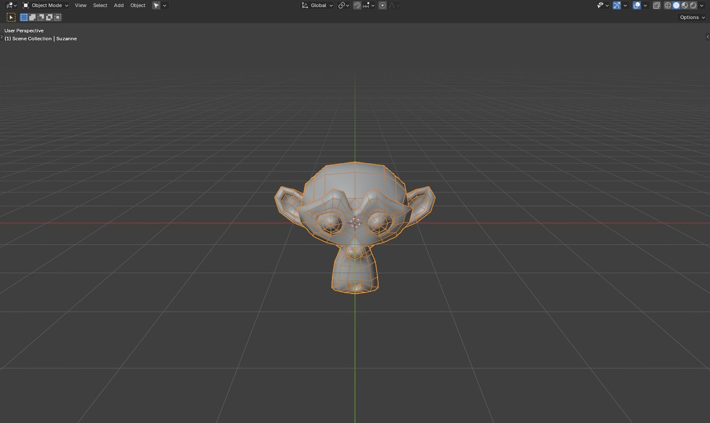
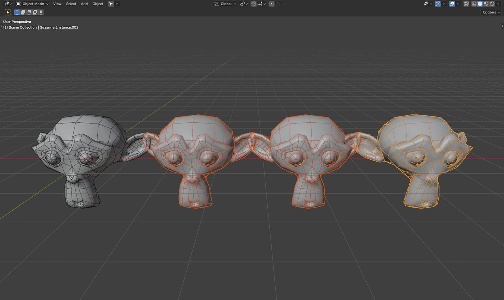
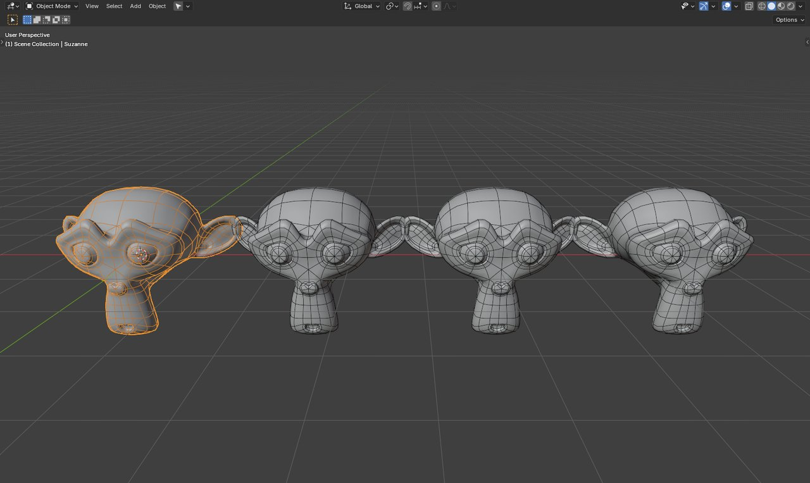
- Select Suzanne.
- Press "Instance Copy" in "Settings".
- In the dialog that appears, choose "Instance", set "Number of Copies" to 3 and X of "Offset" to 2.5, then press OK.
- To the original Suzanne, add "Subdivision Surface" under "Generate" from "Add Modifier".
What to look for: The single Suzanne becomes 4 in a row. The Subdivision Surface added to the original goes into the linked duplicates as it is, and all of them become smooth.
Other Screens
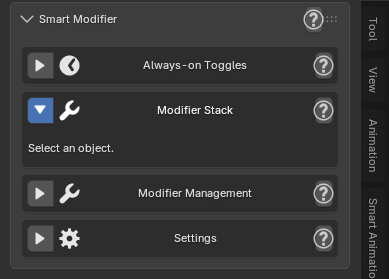
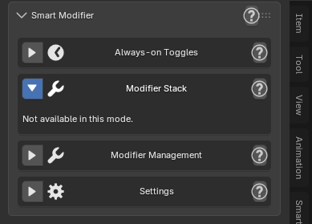
6. Common Tasks
Add a Modifier, Then Edit the Original Shape Again
After rounding corners or smoothing, go back to the original shape and fix it.
- Click an object such as a cube to select it.
- In "Modifier Stack", press "Add Modifier" and choose the modifier you want from "Generate".
- A row is added to the stack. With the 4 icons at the right of the row, you can turn display on or off.
- Click the "Base Object" row. This switches to the stage where you edit the original shape.
- Click the "Base Object" row again to enter Edit Mode. Fix the shape.
- Click the same row once more to return to Object Mode.
Result: You can fix the original shape while keeping the modifier.
Edit While Viewing Only an Intermediate Stage
Check an intermediate shape without being disturbed by the modifiers after it.
- With two or more modifiers present, click the row you want to check to select it.
- Check that the "Modifier Auto Disable" icon to the right of "Add Modifier" is on (it is on at first). The display of the rows after it is temporarily turned off.
- If you also want to see the final shape at the same time, turn on the eye icon ("Show End Result") as well.
- If you want to see everything without stopping any rows, turn "Modifier Auto Disable" off. The stopped rows come back.
Result: You can edit while viewing the shape up to the selected stage.
Attach the Same Modifier to Several Objects at Once
Make it possible to adjust several objects at once with the same settings.
- Hold Shift and click several objects to select them.
- Choose the modifier you want from "Add Modifier". It is added to all of them as a linked (Instance) modifier.
- Select that row, open "Property Items Display", and change a value. The same change is applied to all the connected objects.
- If you want only one object to have different settings, select just that object and choose "Release Instance" from the ▼ menu of the row.
Result: You can adjust modifiers with the same settings together.
Hide the Same Modifier Across the Scene at Once
Turn off the display of a heavy modifier on all objects at once.
- Open the "Modifier Management" section header.
- Press "Modifier" to base management on modifiers. The lists are rebuilt.
- If the list is out of date, press the update icon ("Update List").
- In the "Modifier List", click the row of the modifier you want to hide to select it.
- Of the 3 buttons to the right of the filter field, press the middle one, the dark screen icon ("Viewport OFF").
Result: Viewport display is turned off on all objects that have that modifier.
7. Troubleshooting
- "Select an object." appears in the Sidebar and nothing else is shown.
- This is what appears when no object is selected. Click an object in the 3D Viewport to select it. In modes such as Sculpt Mode and Pose Mode, "Not available in this mode." appears. Switch to Object Mode or Edit Mode.
- Do modifiers added in Blender's standard wrench tab also appear?
- Yes. The stack lists the selected object's modifiers as they are.
- Clicking a row does not enter Edit Mode.
- When you click a different row, only the stage changes and the current mode stays as it is. Clicking the selected row again switches between Edit Mode and Object Mode.
- The "Modifier Management" list is empty or out of date.
- The lists are not rebuilt automatically at first. Press the update icon ("Update List"). If you always want them automatic, enable "Modifier Management List Update" in "Always-on Toggles".
- I pressed "Apply" by mistake.
- You can undo it with Undo (Ctrl+Z).
- No shortcut keys work.
- SmartModifier Suite does not register keys automatically. Copy the ID with "Copy ID" in "Settings", and register only the ones you need in the Preferences keymap.
- When I select several objects, the rows in the stack decrease.
- When several objects are selected, only the linked (Instance) modifiers common to all of them appear. Select just one to see all rows.
For problems common to every add-on, such as an add-on not appearing or the interface language not changing, see "Troubleshooting" in the SmartTools Overall Specification.
8. Glossary
- Modifier
- A way to change a shape later without destroying the original.
- Stack
- The list of modifiers stacked on an object. They take effect in order from the top.
- Base Object
- The stage of the original shape, before any modifiers are applied.
- Instance
- A state in which several objects share the same settings through a link. If you change one, the other changes too.
- Apply
- Baking the result of a modifier into the shape and removing the modifier.
- Cage
- A display in Edit Mode that shows the points you edit on top of the deformed shape.
- Registration ID
- The name of an operation that you enter when registering a shortcut. You can copy it with "Copy ID" in "Settings".
- Edit Mesh Modifier
- A bundled tool. It creates a layer where you edit by moving points on top of the result of the modifiers above it.
9. Appendix: Version, Checksum and Limitations
| Add-on | SmartModifier Suite (smart_modifier_suite) |
|---|---|
| Version | 1.0.0 |
| ZIP | SmartModifierSuite_1.0.0.zip |
| Size | 1,606,224 bytes |
| SHA256 | c03e751eb491a0a9a40a38b47248503a9de127067ef3a497b99a9bdf92d899fb |
Limitations and Notes
- Shortcut keys are not registered automatically. Register the ones you need in the keymap yourself.
- The "Modifier Management" lists are refreshed only when you press "Update List", switch the basis, or enable automatic updating.
- When several objects are selected, the stack shows only the common Instance modifiers.
- Modifiers added without going through SmartModifier Suite, such as from the wrench tab, are not stopped until you next switch stack rows, even when "Modifier Auto Disable" is on (the row icons are shown as on).
- The viewport display of a modifier you turned off manually in the wrench tab stays off even when you switch stack rows. A display that the suite turned off temporarily returns to its original state when you turn it back on from the suite. "Force Enable Selected States" of "Modifier Auto Disable" turns things on according to that setting.
- "Modifier Stack" can be used in Object Mode and Edit Mode. It cannot be used in modes such as Sculpt Mode and Pose Mode.
- The panel appears in the 3D Viewport Sidebar.
SmartModifier Suite Manual v1.0.0 / Built 2026-11-19